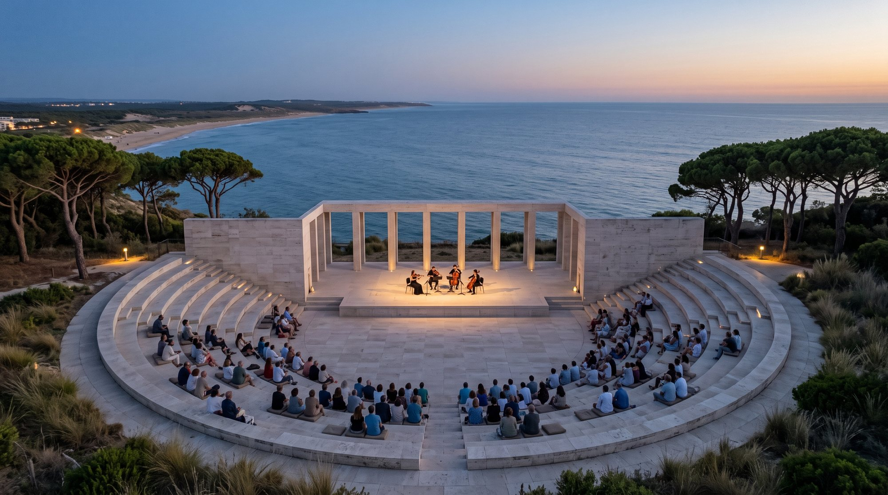
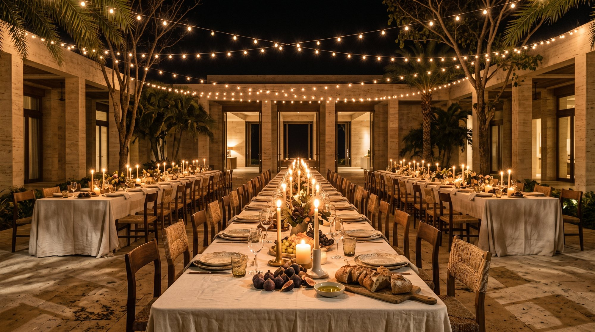
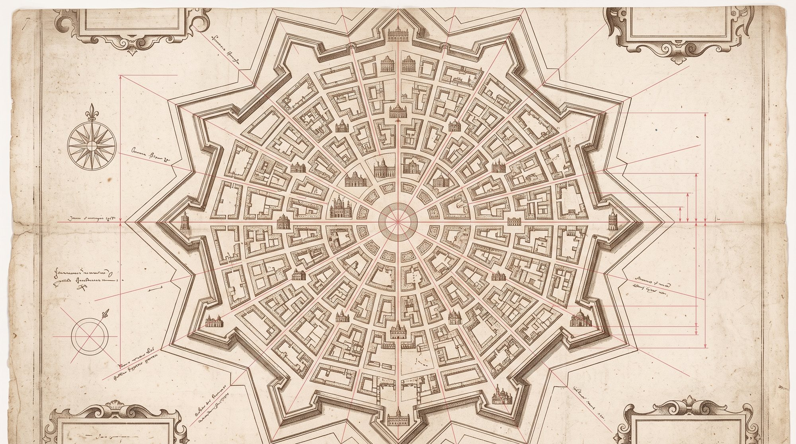

Building a new city · Illustrative walkthroughAggregate preferences
06 · An autonomous political entitySuperintelligence
for collective action.
We’re building toward an autonomous nation that uses superintelligence to understand its members, coordinate shared goals, and improve with each campaign, guided by a constitution and human oversight, and powered by a superintelligence token budget.
01
Aggregate preferences
What superintelligence could uncover
Who would move, and what would it take? Superintelligence connects friends, budgets, and shared needs to find the city’s first residents.
02
Create proposal
Thousands of answers become one plan the members can read, amend and vote on: how many homes, which shared spaces, at what prices.
03
Execute
Shared demand is put to bid. Governments, financiers and builders compete to deliver it, and the city rises from the plan.